AI 每日新聞彙整
全部主題
其他
3 家媒體報導samsungnvhbmhbm
三星傳首度採用台積電 3 奈米？NVIDIA 要求統一製程是關鍵
NVIDIA 要求三星、SK 海力士及美光三大記憶體供應商，統一採用台積電 3 奈米製程製作 NVHBM 基底晶片，以確保產品一致性，並簡化驗證程序。
- 科技新報 TechNews 為什麼三星要結盟台積電，生產下代 NVHBM 3 奈米基礎晶片？
- INSIDE 三星傳首度採用台積電 3 奈米？NVIDIA 要求統一製程是關鍵
- TechOrange 科技報橘 三星 HBM 一條龍模式鬆動？傳接受 NVIDIA 要求，基底晶粒首度交由台積電 3 奈米生產
2 家媒體報導agentsmodelsagent
Nvidia launches new open models to run agents in the enterprise and on PCs
Nvidia is leaning hard into the trend of enterprise companies wanting to run their own open models in their own data centers and also trying to make on-device, private AI agents a thing.
2 家媒體報導accusedsaudiengineer
OpenAI Engineer Accused of Spying on Executives Ordered to Remain in Custody
A judge ordered Abdulrahman Alfozan to remain in custody, likening the Saudi government’s offer to secure the former OpenAI engineer’s release to a “blank check.”
2 家媒體報導character.aidisneyamazon
Disney Asked Character.AI to Go Bankrupt for a Get-Out-of-Lawsuits Card
The entertainment giant hopes to get trust and safety tech, among other IP, from a startup whose chatbots dozens of states allege encouraged minors to self-harm and kill their parents.
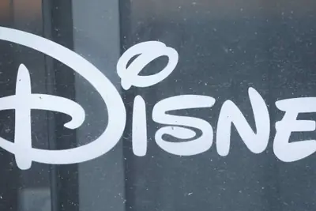
2 家媒體報導robot8000xiaomi
今年上半年我国人形机器人产量超 4 万台，预计全年将突破 10 万台
IT之家 10 月 19 日消息，国务院新闻办公室今日举行新闻发布会，介绍加快推进科技兴商有关情况，并答记者问。 会上介绍，具身智能是人工智能从“数字世界”走进“物理世界”的关键载体，正在成为培育新质生产力的重要抓手。工业和信息化部推动以人形机器人为代表的具身智能产业实现三个“加速”。 一是规模体量加速壮大。今年上半年，我国人形机器人整机产品突破 400 款，产量超 4 万台 ，预计全年将突破 10 万台 。 二是创新能力加速跃升，工信部集聚产学研优势力量，攻关人形机器人和具身智能运动控制、仿真模拟、触觉传感等一批关键技术，带动产品性能不断跃升。 三是产
- IT之家 今年上半年我国人形机器人产量超 4 万台，预计全年将突破 10 万台
- TechOrange 科技報橘 8,000 台人形機器人計畫進上海工廠，西門子：沒有工廠想當 AI 試錯場
computechipdigitimes
DIGITIMES Today：友達玻璃基板不跟群創拚尺寸 | 金管會呼籲謹慎投資注意風險 | 中國擬管制AI晶片設計與算力技術
早安。
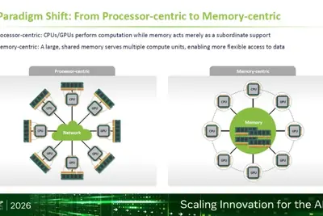
tpugoogle2026
聯發科TPU v9玻璃基板良率卡關？ 2026年拉貨仍拚高檔
近日市場陸續傳出，聯發科與Google合作的TPU v9專案，因Google正重新調整設計，導致整個專案的放量時間可能延後。外界普遍認為，10月底的聯發科法說會，估會給出部分...
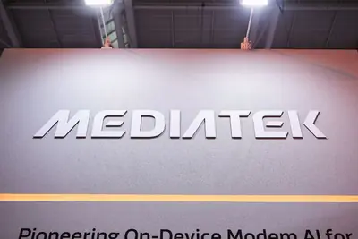
- DIGITIMES 聯發科TPU v9玻璃基板良率卡關？ 2026年拉貨仍拚高檔
compute
解讀一：中國擬管制AI大模型出口 算力、參數與全球排名列入門檻
中國AI業者拓展海外市場，未來可能面臨更明確的技術出口限制。
- DIGITIMES 解讀一：中國擬管制AI大模型出口 算力、參數與全球排名列入門檻
microleddatacenter
光通訊標準未定 鐳昱Micro LED光互連瞄準AI機櫃
AI算力中心對光互連需求急遽升溫，Micro LED也被推向資料中心機櫃內的短距光傳輸。近期，隨大立光董事長林恩平、友達董事長彭双浪對於Micro LED在光通訊領域的看法...
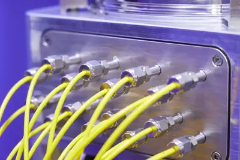
- DIGITIMES 光通訊標準未定 鐳昱Micro LED光互連瞄準AI機櫃
volvonvidia
Volvo攜手NVIDIA深化合作 加速自駕落地
隨全球車廠加速自駕技術研發，Volvo日前宣布全面擴大與NVIDIA長達近10年的戰略合作，透過結合Volvo的安全工程底蘊與NVIDIA領先的AI運算架構，攜手開發新一代先進...
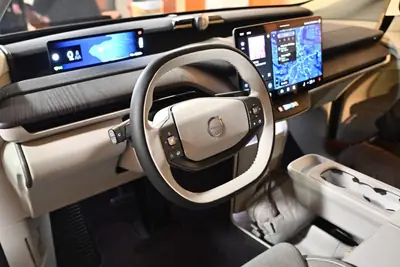
- DIGITIMES Volvo攜手NVIDIA深化合作 加速自駕落地
foxbrainvlmvla
鴻海FoxBrain 2.0持續進化 布局VLM、VLA搶攻實體AI商機
隨著全球AI產業競爭由硬體算力逐步延伸至大型語言模型及實際應用，主權AI也成為各國發展自主技術的重要方向。鴻海除持續擴大AI伺服器及資料中心相關布局外，旗下研究...
- DIGITIMES 鴻海FoxBrain 2.0持續進化 布局VLM、VLA搶攻實體AI商機
iphoneduot-glass
iPhone Duo難逃AI晶片排擠效應 T-glass供應傳變數
蘋果（Apple）首款折疊機iPhone Duo正式開賣在即，供應鏈卻再傳生產變數。繼鉸鏈與整機生產良率問題後，有消息稱，日東紡（Nittobo）T-glass的問題也可能成為影響i...
- DIGITIMES iPhone Duo難逃AI晶片排擠效應 T-glass供應傳變數
chatgptopenai
ChatGPT廣告主衝上6萬家 OpenAI降價搶市、積極招兵買馬
OpenAI積極擴大ChatGPT廣告業務，透過降低廣告價格、增加投放工具及招募廣告人才，吸引更多企業進駐。更有調查顯示，ChatGPT已成為廣告主未來1年最看好增加投放預...
- DIGITIMES ChatGPT廣告主衝上6萬家 OpenAI降價搶市、積極招兵買馬
54.5
AI需求帶動大馬出口創新高 9月年增54.5%
受惠於人工智慧（AI）產品需求，馬來西亞9月出口大增，增幅創5年來新高。
- DIGITIMES AI需求帶動大馬出口創新高 9月年增54.5%
新 AI 工具问世：仅凭一张面部照片即可预测癌症患者生存几率
IT之家 10 月 20 日消息，据彭博社报道，研究人员开发出一款人工智能工具，仅凭一张面部照片就能预测癌症患者的生存几率。该工具可以补充医生的临床经验判断，有望为治疗方案的制定提供参考，在医疗资料不足的场景下尤其有价值。 这个新模型经过训练，既可以估算人的年龄，也能针对癌症患者预测生存情况。研究团队使用超过 4000 万张人脸图像，以及 3 万多名癌症患者的照片完成模型训练，其中不少患者已经离世。发表在《柳叶刀 · 数字健康》期刊上的这项研究显示，该工具会为患者生成风险评分，分数最高的患者更有可能在 90 天内死亡。 科研人员表示，这类研究成果尚属首次
anthropicipo
消息称谷歌前 CEO 施密特持有 Anthropic 1% 股份，将因后者 IPO 收获巨额回报
IT之家 10 月 20 日消息，据彭博社报道，知情人士透露，谷歌前首席执行官埃里克 · 施密特（Eric Schmidt）凭借对初创公司 Anthropic 的早期投资，持有该公司约 1% 的股份。一旦这家企业登陆公开市场，这笔投资将成为个人投资者中收益最高的几笔投资之一。 不愿具名的消息人士称，施密特在 Anthropic 的 A 轮融资中投入了数千万美元。目前尚不清楚在首轮投资之后，他是否出售过部分股权。 市场高度期待的 Anthropic 首次公开募股，将为其员工与投资者带来巨额回报。根据上一轮融资估值，这家初创企业的七位联合创始人每人身家已达

reportedlycomputedeal
Nscale and Anthropic are reportedly in talks for yet another $45 billion compute deal
In August, Nscale and Anthropic announced a $45 billion compute deal. The two companies are reportedly discussing yet another deal of the same magnitude.
bytedance
日本演员工会发布 AI 语音使用准则，龙珠悟空配音演员怒批 AI 盗用其声音
IT之家 10 月 20 日消息，随着生成式 AI 给各行各业创作者带来越来越多的困扰，日本配音演员正在寻找属于自己的方式，抵制他人未经授权使用他们的声音。上周，代表日本配音演员的工会发布了一份 AI 使用相关准则，不少配音演员也讲述了这项技术给他们个人与职业带来的困境。 IT之家注意到，多年来，日本配音演员一直在抵制未经许可盗用自身声音的行为。2024 年，一批配音演员联合成立组织，抗议 AI 声音的滥用，他们特别指出，相关领域缺少版权法律保护。曾为《进击的巨人》《电锯人》《游戏王》配音的津田健次郎（Kenjiro Tsuda），甚至就社交媒体大量使用
steamvalve
Steam 新品节充斥低质 AI 游戏，玩家呼吁平台新增 AI 内容筛选功能
IT之家 10 月 20 日消息，Valve 面向独立游戏与试玩版的活动 Steam 新品节（Steam Next Fest）已经开幕，尽管历届新品节都会涌入大量粗制滥造的游戏，但本届这类作品的数量似乎比以往更多。 浏览新品节页面，很容易就能发现大量游戏的美术风格看起来就像是通过简单的 ChatGPT 提示词生成的。随着 Claude Opus 5.5 发布，过去几周围绕其出现大量反编译与混搭模组，大量游戏要么使用 AI 生成图做宣传素材，要么直接由 AI 生成，这一现象并不出人意料。 IT之家注意到，不少 Steam 玩家对此感到不满，他们需要在海量
jupitergh200
英伟达官宣新突破：创纪录量子容错计算模拟所需物理比特减少 90%
IT之家 10 月 20 日消息，当地时间 10 月 19 日，英伟达宣布在德国于利希超级计算中心（Jülich Supercomputing Centre）开展了创纪录的容错量子计算模拟。 英伟达研究人员利用欧洲最大规模超级计算机 JUPITER（木星）完成此次模拟，这是一个基于英伟达 GH200 超级芯片组成的系统。本次使用 8192 块 GPU 完成 104 量子比特容错量子计算模拟，是迄今为止针对容错量子计算系统所进行的最大规模综合模拟。 该模拟使研究人员能够全面探索并验证“魔态培育”（Magic State Cultivation），与以往的方
guardian
微软警示前沿 AI 模型不可信：AI 智能体堪比内部威胁，推出 Guardian Agents 防护方案
IT之家 10 月 20 日消息，微软于当地时间周一推出了多项全新安全功能，旨在帮助企业抵御日益严峻的智能体带来的安全威胁。发布该产品之际，微软持续向企业警示人工智能与智能体存在的各类风险。 IT之家注意到，本次新增功能中最受关注的当属守护智能体（Guardian Agents），这项新功能用于监控企业内部正在使用的各类 AI 智能体。守护智能体隶属于感知项目（Project Perception），感知项目是微软在 6 月推出的产品。 感知项目是微软针对 Anthropic 的 Mythos、Fable 等强大黑客模型，以及 OpenAI 的安全漏洞扫
2027computecowos
AI 算力浪潮與地緣雙軌演進！2027 年半導體設備競格全解析
摩爾定律單晶片微縮效益遞減，使 CoWoS、Hybrid Bonding 等先進封裝成為延續算力的關鍵，測試複 […]
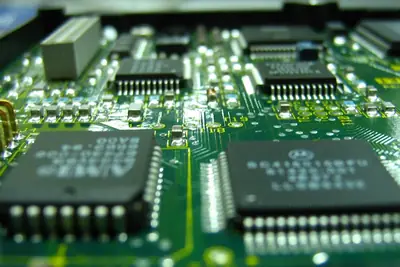
- 科技新報 TechNews AI 算力浪潮與地緣雙軌演進！2027 年半導體設備競格全解析
huggingfacepolicy
Embedded AI evaluators won’t be an easy solution, Hugging Face’s policy chief says
AI labs have staked their reputations on model benchmarking — the supposedly neutral and accurate system of evaluations that are designed to measure whether one AI product is better than another. However, the methods behind these evaluations are complicated and still maturing, sa
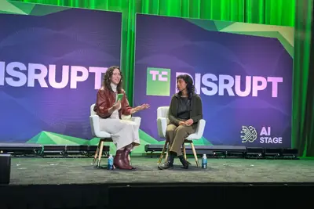
fossilfuelcomeback
The fossil fuel comeback is here
The US is building more fossil fuel infrastructure than it has in a decade while renewable energy growth slows down, a new report shows. Electricity demand is also climbing faster than it has in more than a decade with more data centers, factories, and electric vehicles plugging
- The Verge AI The fossil fuel comeback is here
2030datacenterneocloud
【科技早餐】微軟傳退出英國 AI 資料中心案，電網供電恐等到 2030 年代
【科技早餐】今天精選 7 則國內外重要科技新聞。 ＊微軟傳退出英國 AI 資料中心案，電網供電恐等到 2030 年代 微軟（Microsoft）傳出終止與英國雲端基礎設施業者 Nscale 的資料中心協議，讓 AI 擴張的用電瓶頸再度浮上檯面。《Reuters》指出，位於英格蘭艾塞克斯郡 Loughton 的案場多次延誤，電網業者告知 Nscale，預計要到 2030 年代才能供電。微軟拒絕評論，終止協議的確切原因尚未獲公司說明。《Financial Times》另引述知情人士報導，微軟原擬承租該案場全部 50 MW 容量，如今 Nscale 必須另覓租
- TechOrange 科技報橘 【科技早餐】微軟傳退出英國 AI 資料中心案，電網供電恐等到 2030 年代
- TechOrange 科技報橘 AI 雲端市場醞釀洗牌，NVIDIA 除了 GPU 訂單，還有哪些風險？
debtcoreweavebecoming
CoreWeave’s debt is becoming the whole AI industry’s problem
CoreWeave had a bad week last week. Its bonds slipped into distressed territory by a common definition - when investors demand 1,000 basis points more in yield than they'd get from government bonds. Last Tuesady Chamath "SPAC King" Palihapitiya noticed the distressed debt, and al
chipsnvidiahits
Amazon is taking its biggest shot at Nvidia yet with new TorchNeuron dev tool
Amazon wants to break Nvidia’s hold on PyTorch, the free toolkit used to build most AI apps, so that more developers run their apps on alternative chips like its own.
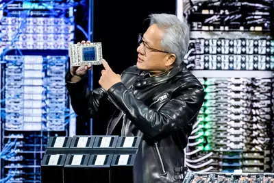
英伟达黄仁勋：AI 是新工具，你的专业知识不会被取代
IT之家 10 月 20 日消息，在柏林对话德国总理弗里德里希 · 默茨（Friedrich Merz）时，英伟达首席执行官黄仁勋表示 AI 不只是聊天工具， 它将进入工厂、机器人和医院等场景，增强已有的专业能力和产业经验。 在本次对话中，黄仁勋和默茨讨论如何结合德国制造业优势与 AI，推动 AI 在汽车、机械制造及中小企业中普及。德国联邦政府同时与英伟达签署联合意向声明，拟共同推进面向物理 AI 的先进模型，让 AI 进一步应用于现实世界的工业场景。 黄仁勋表示， 德国企业积累的工程、制造和科学知识是重要优势 ，AI 将增强这些能力。他将 AI 形容为
hackersopencodeopensource
Hackers hit AI coding tool OpenCode, running up charges on users’ AI accounts
OpenCode is an open source AI coding agent that's become a popular alternative to Claude Code and Cursor. But hackers got into part of its online platform and stole some users’ API keys, and the AI tools it turned to for help kept refusing to look at the malicious code.
germanyindustriallead
Germany Wants to Lead the World in Industrial AI: How NVIDIA Will Help
In the cavernous hall of Kraftwerk, a former power station in Berlin, German Chancellor Friedrich Merz and NVIDIA founder and CEO Jensen Huang sat down to discuss Germany’s AI roadmap, and in particular, the industrial applications of AI. Huang opened by tracing NVIDIA’s longstan
tolancompanionsnags
Tolan snags $30M for its AI companion that helps users navigate life
AI companion app Tolan has raised another $30 million after attracting more than 250,000 active users.
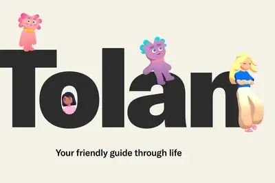
assistantshereplika
Replika’s founder built the AI assistant she pitched at Disrupt 12 years ago
Eugenia Kuyda's newest startup Wabi is positioned to take advantage of an idea she had more than a decade ago. Wabi offers a personal AI assistant with a twist, free and downloadable to anyone today.
internetmightworse
Making the internet better for AI agents might make it worse for everyone else
This story originally appeared in The Algorithm, our weekly newsletter on AI. To get stories like this in your inbox first, sign up here. Until recently, you could divide internet users into just two categories: bots and people. Websites have long allowed bots to perform automate
- MIT Technology Review AI Making the internet better for AI agents might make it worse for everyone else
claimworldlooking
“We were looking at it wrong”: The explosive claim that’s upended the AI world
“I think I have good news about the nature of neural networks.” With those simple words of optimism, Nick Cammarata, a researcher at the AI startup Goodfire, kicked off a 26,000-word blog post that has knocked the AI world on its head, sparking wild speculation as well as cautiou
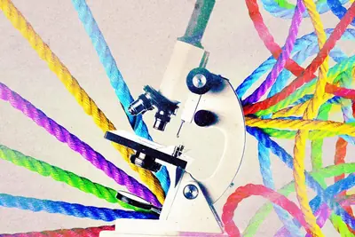
- MIT Technology Review AI “We were looking at it wrong”: The explosive claim that’s upended the AI world
surveillancefindflock
How to find Flock cameras near you with MapQuest’s new ‘surveillance layer’
A name from the past is emerging again to help you stay out of sight of surveillance cameras.
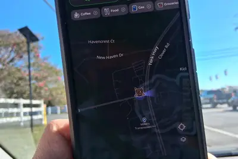
indiegameclones
AI game clones are making indie developers afraid to show their work
Delayed Steam Next Fest demo is a sign of a growing problem for indie devs.
smartpeopletvs
People are using AI to make their smart TVs dumb again
Fed up with ads, tracking, and sluggish interfaces, some smart TV owners are turning to AI agents to strip away bloatware and take back control of their TVs.
- TechCrunch AI People are using AI to make their smart TVs dumb again
whatsappinstructionschatbot
WhatsApp Help Pages Leaked Hidden Instructions for a Meta Chatbot
Around 80 pages on WhatsApp’s website exposed instructions that were designed for its chatbot, including “WHAT NOT TO SAY.” Meta says a bug caused the issue.
geminiargon13.5
四个谷歌 Gemini 4 Argon 智能体成功击败末影龙通关《我的世界》，耗时 27 小时
IT之家 10 月 19 日消息，谷歌研究人员近日发布论文称，他们使用四个 Gemini 4 Argon 智能体成功通关《我的世界》，仅用 27 小时就成功击败末影龙。 谷歌将 4 个 Gemini 4 放入随机生成的世界中，他们可以通过游戏内的聊天框互相协调。但研究人员没有为他们制定任何策略，只是说了最终目标，所有行为都由智能体自行规划。研究人员可通过仪表板观察他们，下达暂停 / 终止测试指令，但没有权利介入。 游戏开始后，这些智能体很快分担了不同任务：有的建造末影人农场；有的收集食物；有的专注于探索。它们会分享战斗技巧，并在队友死亡后寻回丢失的装备。
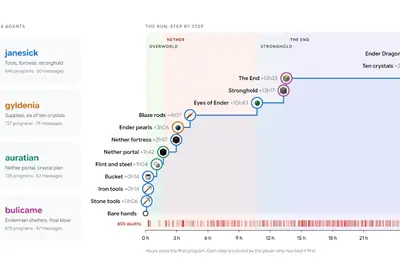
rtxsparkoem
記憶體漲價擋不住頂規買氣，RTX Spark 需求集中 64GB、128GB 透露「地端 AI 經濟學」
近期全球記憶體價格大幅飆漲，讓整個消費性電子與 PC 產業都面臨成本攀升與漲價壓力。照理來說，終端售價變貴應該會讓買家退而求其次、選擇入門規格，但 NVIDIA 個人運算業務資深副總裁 Jeff Fisher 卻透露，從 RTX Spark 的早期需求指標來看，市場買氣反而高度集中在 64GB 與 128GB 統一記憶體的最高階配置版本。
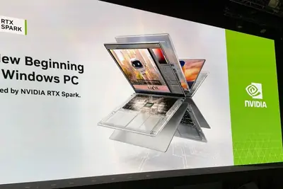